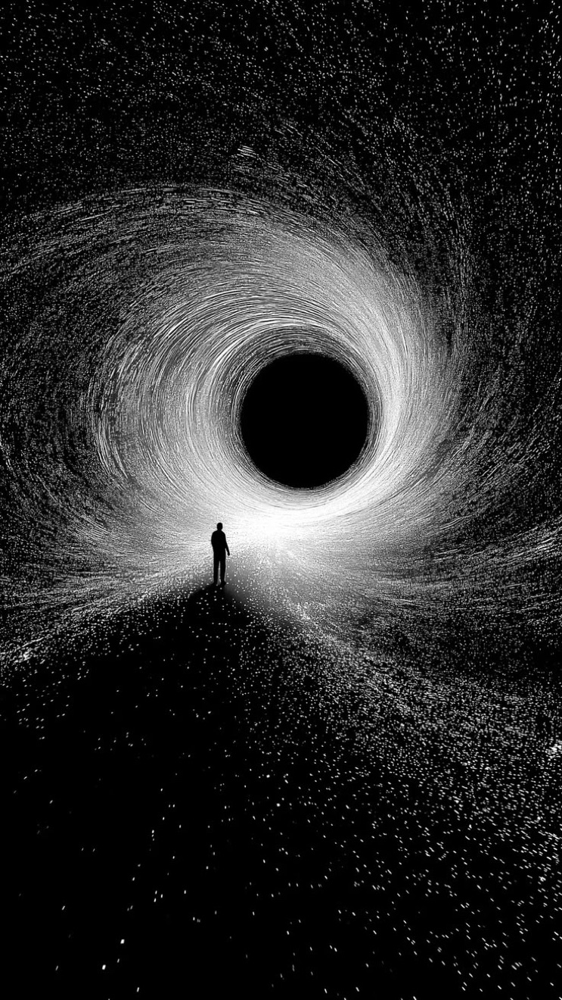
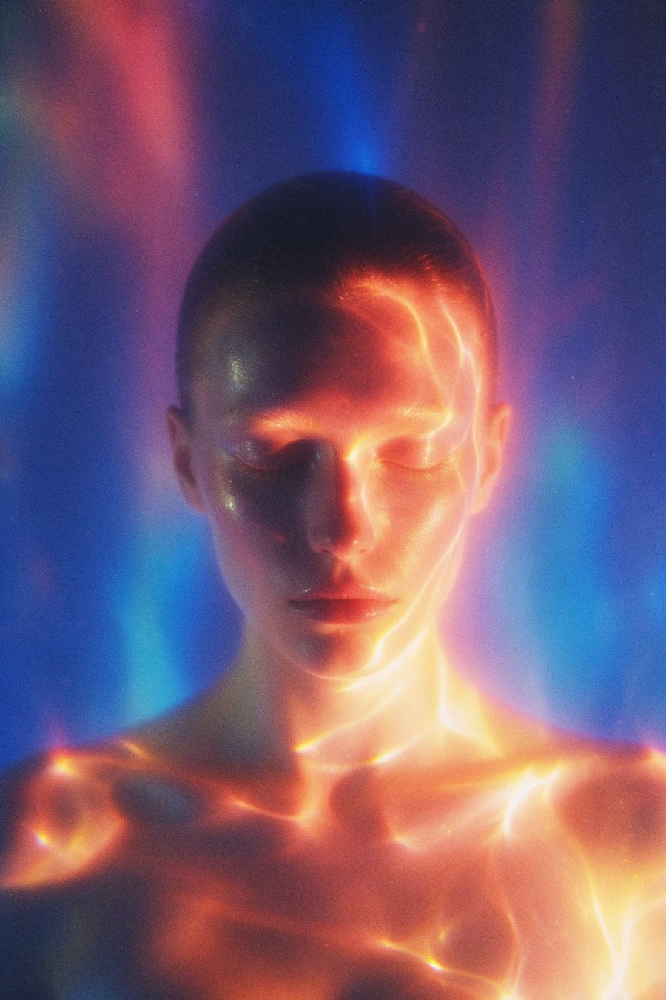

The brand universe
以宇宙的尺度，
重述生命的可能。
把看见的世界、感受到的深度与持续追问的命题，
转译为更多人可以进入、感受与共同创造的经验。
The origin of the vision
所见成为入口，
所悟通向共创。
「潼眼看」源于“通过我的眼睛看宇宙，看世间，看自己”，并由此延展出一幅关于生命、宇宙与意识的品牌图景。
我们将镜头抵达之处、内在感知之境与跨越学科的思考，转译为影像、声音、空间和数字世界。让感知不止于观看，让深刻的体验能够被分享、被进入，并在不同生命之间继续生长。
星际、银河与高维生命构成品牌的精神视野。我们以此展开灵性成长的探索，并以慈善公益为价值根系，将对生命的追问延伸为创造、连接与服务。
感知的边界可以延展。
给予的维度，也可以。
Philanthropy of the inner life
当物质丰盛，
灵魂仍在寻找源头。
从慈善及公益管理的求学，到公益慈善研究、项目协作与外联拓展的实践，一个问题持续贯穿品牌主理人的思考：真正的公益，如何触及生命深处的匮乏？
物质资源的可及性关乎生存；意义感、精神归属与灵魂探索，同样关乎一个人如何生活。财富与成就并不自动回答“我是谁”“为何来到这里”“此生能够贡献什么”。
潼眼看希望将公益的视野延展至精神与灵魂层面：通过艺术、灵性实践与共同创造，为生命的内在丰盛打开更多入口，让给予涵盖意识、感知与创造力的生长。
我们以“能量提升”与“地球扬升”为精神愿景，珍视个人的内在转化，也珍视这份转化如何进入人与自然、科技与文明、个体与整体的关系之中。
The inner & the infinite
向内探索灵魂，
向外追问无垠。
灵魂从何处来，又将去往何方？意识是否拥有超越肉身的维度？在可见宇宙之外，生命还可能以怎样的形态存在？
这些开放的命题，连接灵性哲思、地外生命想象、AI与前沿科技，也构成潼眼看持续创作的深层线索。
电影美学的视觉纪录是其中一个入口。我们以国内外的自然、文明与生命经验为素材，使影像成为连接感官与意识、现实与未知的语言。不同媒介由此汇流，共同服务于品牌更广阔的内外探索。

The cosmos within内在宇宙
静观、灵性成长与自我探寻，向生命深处保持开放。
Light in creation
光的实践
将感知转译为艺术与体验，将愿景落实为可共同参与的创造。
The living network
共生网络
让独立的专业与精神追求形成连接，在彼此成就中持续生长。
The founder
李沛潼
Katherine
潼眼看品牌主理人
慈善及公益管理硕士，深耕公益慈善研究、项目协作与外联拓展等工作。
她将公益视为一场持续追问生命需求与给予方式的实践。从现实资源的协作，延展至精神丰盛与灵魂意义的探索，始终关注一个问题：怎样的给予，能够唤起生命自身的创造力量？
潼眼看由此汇集电影美学、灵性成长、疗愈共建与多维创作。以星际视野容纳未知，以公益之心连接行动，让深邃的感知在世界中获得可以共享的形态。
TongGaze · Brand constellation
一个母品牌，
延展为元素系列。
潼眼看（TongGaze）是品牌母体。围绕元素意象，展开一组彼此关联的子品牌系列。
查看母品牌标志光
LumiGaze风
AeroGaze火
IgnisGaze雷
TonisGaze金
AurumGaze土
TerraGaze木
SylvaGaze以太
AetherGazeThe intention
以觉知为起点，
以创造与服务为回响。
让每一份关于生命的探索，拥有通向更广阔世界的可能。
进入疗愈共建回应共创邀约